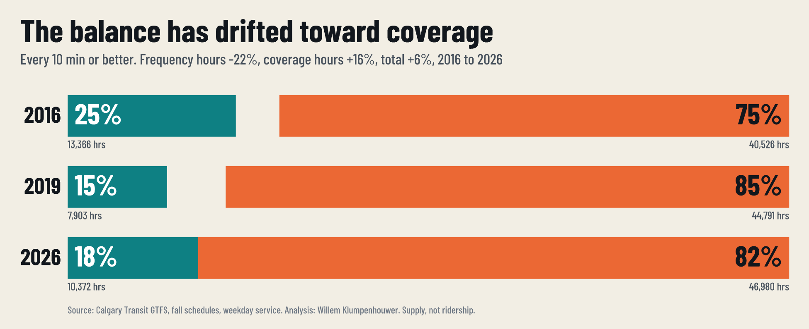
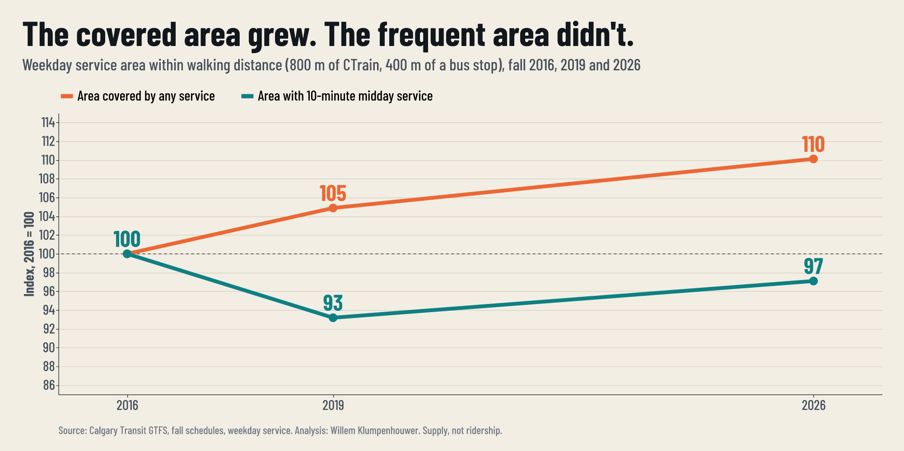

Calgary's transit network does two jobs. Council has never been asked how to balance them.
Transit provides two different types of service. Frequency service runs often enough that people can turn up and go, and it is what drives ridership. Coverage service puts a stop within a walk of nearly everyone, whether or not many people use it. Both are legitimate. They pull against each other, because every hour of service goes to one or the other.
Today we judge both the same way, mostly on productivity. The balance between them is set indirectly, through where new communities are built, what gets rezoned, and how the transit budget is allocated. No one decides it on purpose. Using the City's own published schedules, I measured how that balance has moved.
This is a question about balance, not a call to cut coverage. Administration is best placed to cost the options.


New communities on the edge of the city each need coverage service to be reachable at all. Rezoning, and rezoning that does not happen, decides whether growth lands on corridors where frequent service works or on places where it does not. Transit budget decisions then split the hours. None of these decisions reports its effect on the balance.
Leaning toward coverage reaches more of the city but spreads hours thin, and ridership will likely shrink. Leaning toward frequency makes transit usable without a timetable, and ridership will likely grow, but some edge areas get less service and need a plan, such as on-demand service or a longer walk to a better stop.
Method. Calgary Transit GTFS schedule feeds for the fall 2016, 2019 and 2026 signups, using one reference Tuesday, Friday, Saturday and Sunday in each, weighted to a week. Revenue hours run first stop to last stop, plus a 10% allowance for deadhead. A route-hour counts as frequent if trips per hour, per direction and smoothed over three hours, meet a 10-minute headway. CTrain hours are counted at 2.5 times bus hours (the result holds across 2 to 3 times). School specials are excluded. Walking distance uses 800 m around CTrain stops and 400 m around bus stops. Routes were restructured between 2016 and 2026, so I rely on area and stop-level measures for the trend. The 2026 schedule is the published fall plan, not observed service.
Data. City of Calgary Open Data. Code, data and an interactive explorer where you can change the frequency threshold: wklumpen.github.io/budget-2026. Analysis and design by Willem Klumpenhouwer.